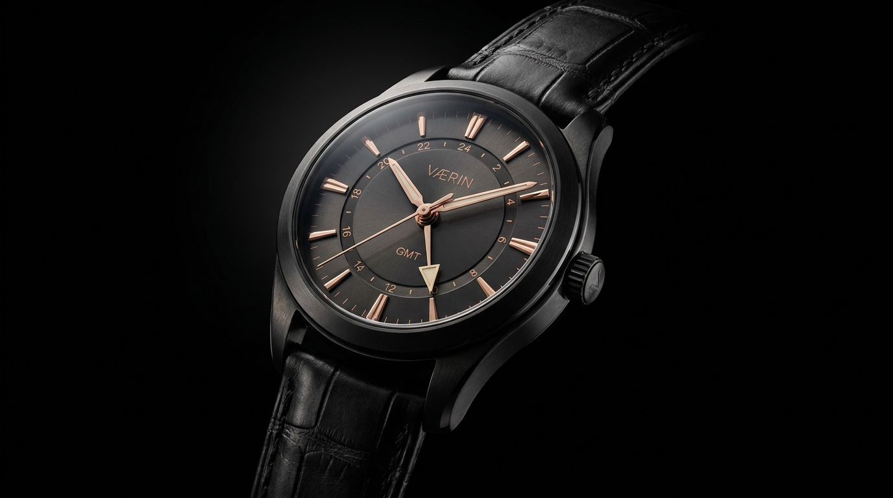
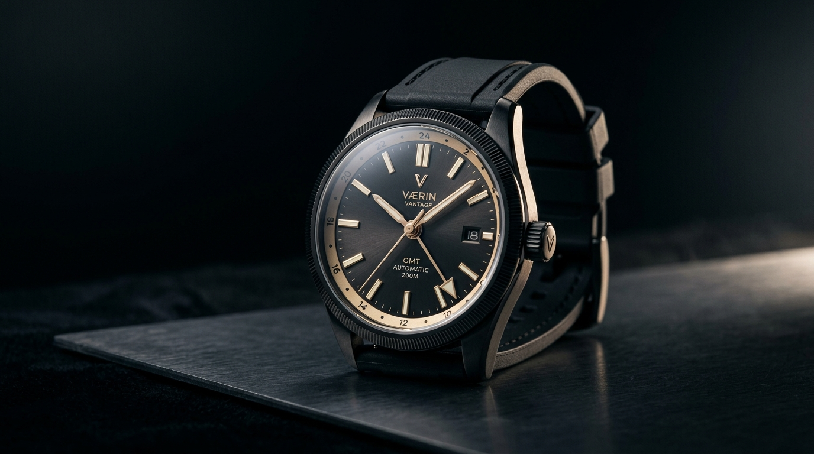

01
AURELIS
Skeleton Chronograph
The movement, laid bare. Black bridges, rose-gold bevels and two pushers — a chronograph with nothing to hide.
DiscoverWe build watches for people who notice. Every bevel, every bridge, every sweep of the second hand is composed slowly, in low light, until it is exactly right.

A 41 mm case finished in matte charcoal, with a coin-edge bezel that grips as well as it looks.
A signed screw-down crown seals the case to 200 metres. The hands you see are keeping real time.
A triangle-tipped GMT hand rides a 24-hour bezel, so home is never more than a glance away.
Sunburst charcoal, rose-gold batons and a date at three. Quiet until the light finds it.
The movement, laid bare. Black bridges, rose-gold bevels and two pushers — a chronograph with nothing to hide.
Discover
A slate sunburst dial and applied rose-gold batons. The quiet traveller, on an alligator-grain strap.
Discover
The everyday travel watch. A cream 24-hour bezel, lume-filled batons and a rubber strap built to be worn hard.
DiscoverSapphire first. Beneath it, the dial and hands sit exposed.
Each control is its own small machine, sealed against water and dust.
Wheels, bridges and screws separated — then reassembled by hand.

Brushed flanks, polished chamfers. Each surface is worked on its own wheel.

Edges are filed and angled by hand — the detail you only see when you look closely.

Rose-toned bridges, blued screws and jewels, assembled and regulated in-house.
Straps are cut and stitched to sit low and flat. Blackened steel meets warm rose-gold flanks — contrast that ages well.